数字人渲染引擎 · 一节课程
六个引擎的功能、特点、真机证据与选型结论 · 一页看完 · 口径 2026-11-23
事实来源全部在仓库内：选型结论 docs/design/2026-11-22-数字人渲染选型-产品视角.md · 换装抽象 docs/design/2026-11-23-换装抽象与特效层设计.md · 槽位现状 scripts/dh-lab/live2d-lab-assets/wardrobe-spec.json · 引擎枚举 DhEngineId.kt（SIMPLE / LIVE2D / DUIX / TAO_AVATAR / VRM）· 各 demo 真机验收笔记与截图（已复制进本页 img/）。证据标签：实测 = 真机/代码验证过，spike = 桌面验证未上真机，调研 = 带来源的外部记录。
总结论（2026-11-23 拍板口径）
- Live2D = 当前真机主线——换装做得最好（四轴 180 组合已上线），但 Expandable Application 条款书面确认前不上生产；内部验收不受影响。
- Simple = 已上线兜底——零成本零授权，永久保留为降级层。
- Spine = 随时候补——skin 换装 spike 已通（像素级证据），测试阶段按用户口径忽略编辑器许可；进主线只差采购拍板。
- VRM = 试验田——360° 旋转是天然能力，描边已验；lab only，3D 的最终决策钥匙在 Web 版。
- DUIX = 会说话的视频窗口——不是可交互 HER；交互投入已冻结，写实路线改走服务端流。
- Tao = 不可用，待下线。
1 · Live2D（Cubism）当前真机主线许可待书面确认
二次元立绘天花板：口型 / 视线 / 摆头 / 换装全在真机跑通，换装能力全场最好。
- 是什么
- Cubism .moc3 模型（ATRI）+ exp3 表情参数，vendored 渲染 .so（本仓库自带补丁：背景色第 20 导出）。【实测】
- 换装抽象
- exp3 参数组
{(Id, Value)} 开关 moc3 里预画的 ArtMesh——换装是「切已有零件」，不是运行时合成。四轴（上衣/鞋/手持/表情）已上线，共 180 组合；单一事实源 wardrobe-spec.json：内衣槽 3 变体 = pending-art（moc3 没有内衣零件，要美术在编辑器重制 ATRI-v2），头饰槽 2 变体 = pending-param（参数存在但无已验证值）。卡点是素材不在代码。【实测】
- 点击交互
- 分区触点真机全通：头→脸红、手→蟹娘手持、脚→凉鞋、躯干→换装循环；24 组表情全注册、四开关正交互不抹除。曾拆掉两个真崩溃（LiveKit 发送抛异常 →
RoomSendGuard；JNI 场景变更并发 → GL 线程 dispatcher），修复后六连点零崩溃。【实测】
- 旋转
- 无真 3D 旋转——只有 GAZE 视线跟随 + 说话摆头，转头没有弧面变化（2D 属性）。
- 许可成本
- Expandable Application 条款把「avatar」写进了例子：若命中则无小规模豁免，分成 20% 或 ¥300/激活。固定官方模型 + 不开放 UGC 的形态可能不构成 expandable，但这是推断——书面确认前不上生产真金白银。技术退路见末节（ayagami / PurismCore）。【调研】
- 真机证据
- demo#2b（2026-11-22 18:40，ADY-AL00）：head/hand/foot/body 六连点全命中 + 换装截图；背景色修复后舞台底采样 RGB 与预测逐值相等；表情淡变 1.0s→0.2s。【实测】
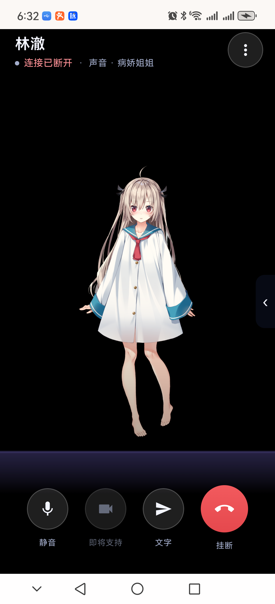
点头部 → blushed=true（region=head）
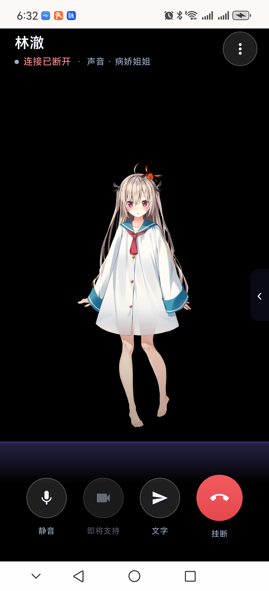
点左手 → 蟹娘手持（region=hand）
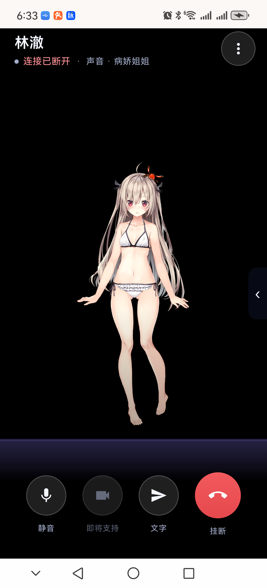
躯干循环第一档：比基尼
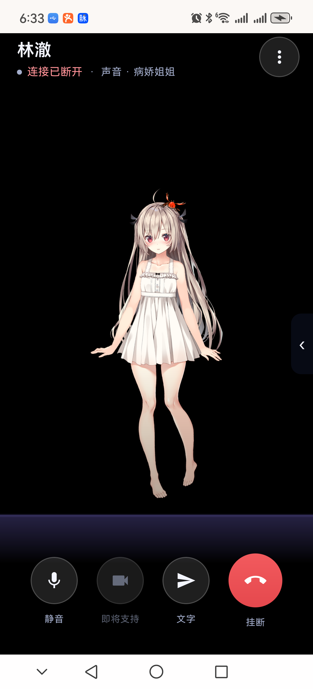
躯干循环第二档：睡衣（0.2s 淡变到位）
2 · Simple 分层立绘已上线兜底
自研分层 PNG：唯一零成本零授权的引擎，上限是「剪纸感」，但永远该保留。
- 是什么
- 自研分层立绘渲染器，能力位 STATE/EMOTION/MOUTH/TOUCH_TAP。呼吸、眨眼、嘴型、情绪、点击脉冲全通；双指缩放/拖动（
AvatarStageTransform）、陀螺视差、主题色板都挂在它身上。【实测】
- 换装抽象
- 分层 drawable 换图层（wardrobe 抽象里 binding = 换图层）——加素材 = 出一套新的 PNG 分层件，纯美术成本、无运行时机制创新。整图重画路线撑不起换装商城。【实测+调研】
- 点击交互
- TOUCH_TAP 已上线（点击脉冲），是所有引擎里第一个把「点她有反应」做成生产功能的。【实测】
- 旋转
- 无。头发不随头摆、转头无弧面变化——「剪纸感」是它的钉死上限（avatar-2d-design §0）。Simple+ 六件套（瞳孔层视线/眉毛层/随机微动作）是把免费线做到上限的路。【调研】
- 许可成本
- 零。自研自有，无第三方一分钱。这是它作为降级梯子（P4）永久保留的根本理由：低端机看到的是同一个她。【实测】
- 真机证据
- 生产在线；引擎协议层（AvatarCommand/AvatarCapability + CueCompiler）从不认识具体渲染引擎，换引擎只是多写一个 adapter——这条架构护城河今天就存在。【实测】
3 · Spine（2D 骨骼）随时候补 · spike 已通尚未有引擎位
唯一把「换装做成数据结构」的方案：DhEngineId 里还没有它，但管线证据已经闭环。
- 是什么
- EsotericSoftware 2D 骨骼动画。spike 走 WebView + @esotericsoftware/spine-webgl 4.2.120（照抄 VRM 引擎模式：assets 离线内置 + evaluateJavascript 桥），bundle 自含 core 仅 222 KB。【spike】
- 换装抽象
- skin 字典运行时合成：多个部位 skin
Skin.addSkin 拼成一套、setSkin 生效；单件覆盖、槽位级附件替换（setAttachment("mouth", …) = 离散口型锚点）全部验证。官方 mix-and-match 示例 34 skins 直接跑。这就是产品视角文档「换装=skin 字典」论据的实证。【spike】
- 点击交互
- 数据模型支持 attachment 命中区（选型论据），spike 未做触点——进主线时随引擎一起补。【调研】
- 旋转
- 骨骼 + IK 约束可以做头发跟随、伪转头（transform/IK 约束在样本资产里就有），但不是真 3D；真 360° 归 VRM。
- 许可成本
- runtime 随产品分发不需要终端用户购买，但产出生产素材必须持 Professional 编辑器席位（促销 $379）——Essential 导不出 mesh/IK，skin 换装素材恰恰离不开 mesh；无免费合规路线。测试阶段按用户口径忽略许可；示例素材禁商用，只证管线。营收 ≥$500k 触发 Enterprise（$2,499 起）。【调研，2026-11-22 实抓原文】
- spike 证据
- 像素级 + API 级双重：三套合成 outfit 变化 23–28%；同 skin 回切仅 0.05%（渲染可复现）；口型 close↔smile 的 2,379 px 全部落在嘴部 128×27 框内，其余画面逐位相同。未上真机（mid-range GPU 画 219 个 mesh 的开销待测）。【spike】
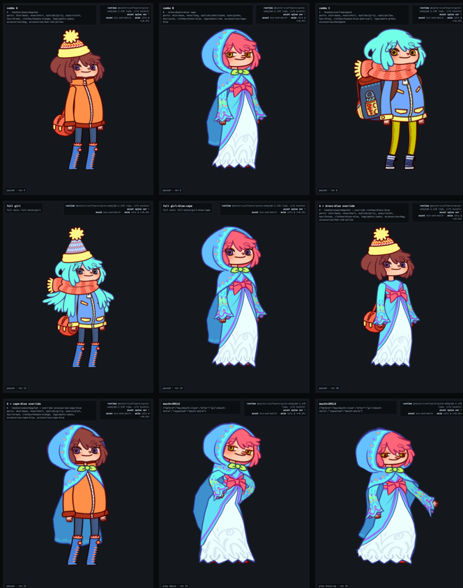
spike 证据总表：同一骨架同一姿势下 outfit A/B/C、4 套预制 skin、单件覆盖、口型切换、动画 crossfade——每一步截图与操作一一对应。
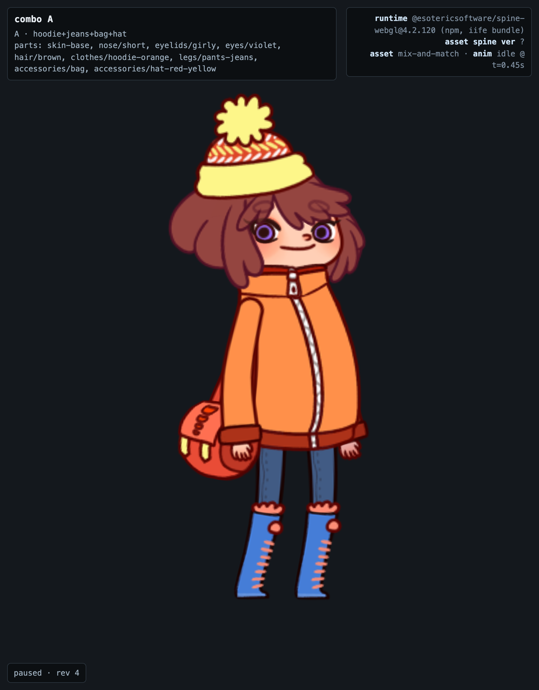
运行时合成 outfit A（9 个部位 skin）
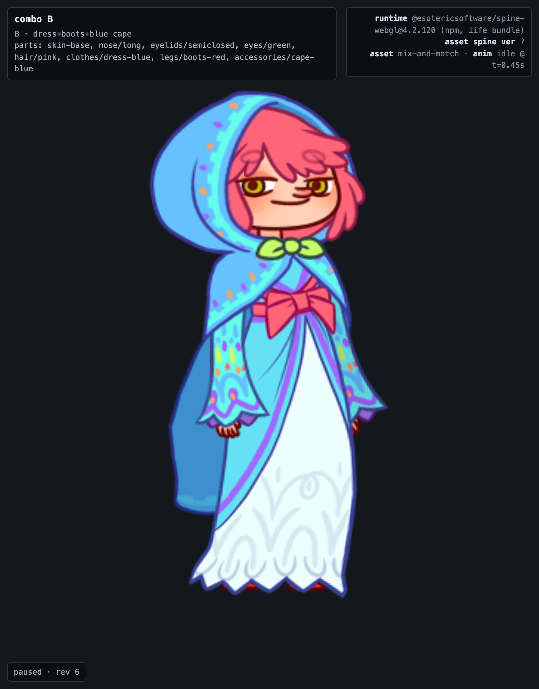
同一骨架合成 outfit B（差异 23.34%）
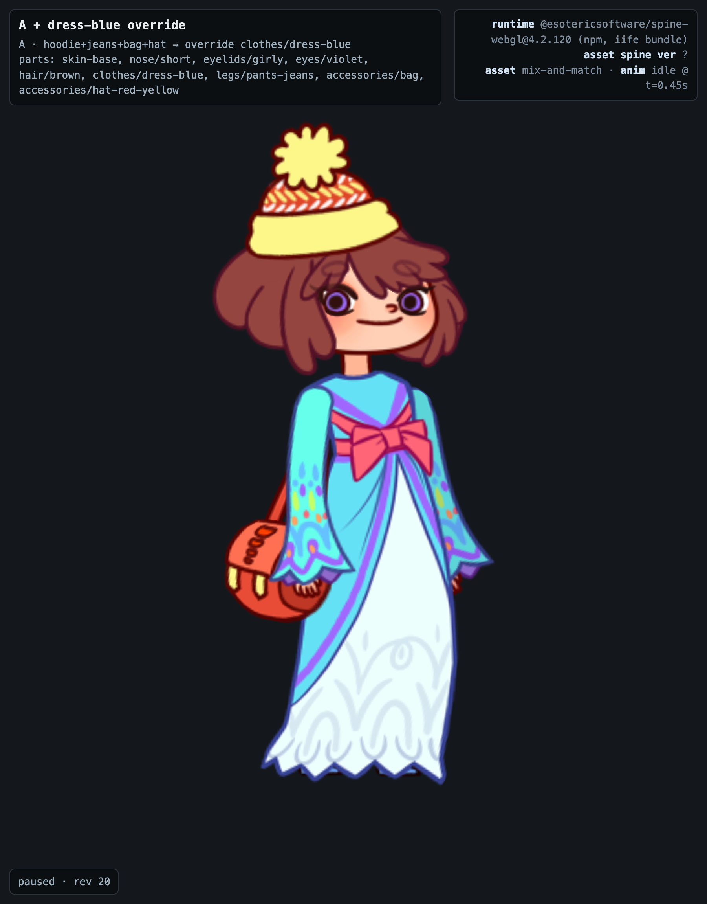
A + 单件覆盖 dress-blue：只换衣服，发型/眼睛/包不变
口型附件 close（去 HUD 特写）
口型附件 smile：变化全部落在嘴部框内
4 · VRM（WebView + three.js）试验田 · lab only
真 3D 在 WebView 里跑通了：360° 轨道旋转天然、描边已验；模型授权逐件，所以留 lab。
- 是什么
- WebView + three.js 0.187 + @pixiv/three-vrm 3.5.5（场景页源码在
scripts/dh-lab/vrm-scene/），通话页全幅渲染，DhEngineId.VRM，lab / debug 包专用。【实测】
- 换装抽象
- 命名网格节点显隐 / 材质替换（three-vrm node visibility）——抽象上挂得上 wardrobe 槽位，未实做。VRM 模型
commercialUsage 默认 personalNonProfit，逐模型授权是雷区。【调研】
- 点击交互
- 分区触点真机在案：上半屏=摸头→happy+低头缓冲，下半屏=碰身体→surprised，1.4s 复位；加了旋转后仲裁没破（同屏
tap region= 与 rot= 都在）。【实测】
- 旋转
- 360° 是天然能力：单指横拖→绝对 yaw 累加（掉指令不错位），设备实测两笔 251°+250°、复验 460° 转回正面；MToon 描边已验（14 个材质统一换屏宽坐标系 0.004，反壳由 three-vrm 自带）。【实测】
- 许可成本
- three.js / three-vrm 全 MIT；卡的是 VRM 模型逐件授权（示例模型 personalNonProfit 只能留 lab）。3D 资产管线重 2D 一个数量级（外包单价 3–10 倍）。【调研】
- 真机证据
- demo#1（2026-11-22）渲染+拖动+指令管线闭环（68,692 三角、tick 稳定、drag 零 CANCEL）；demo#1 后续（2026-11-23）旋转+描边装机复验闭合——注意装机验收必须 pull 回
base.apk 比对字节数（曾被别的会话的 apk 抢装造成假象）。【实测】
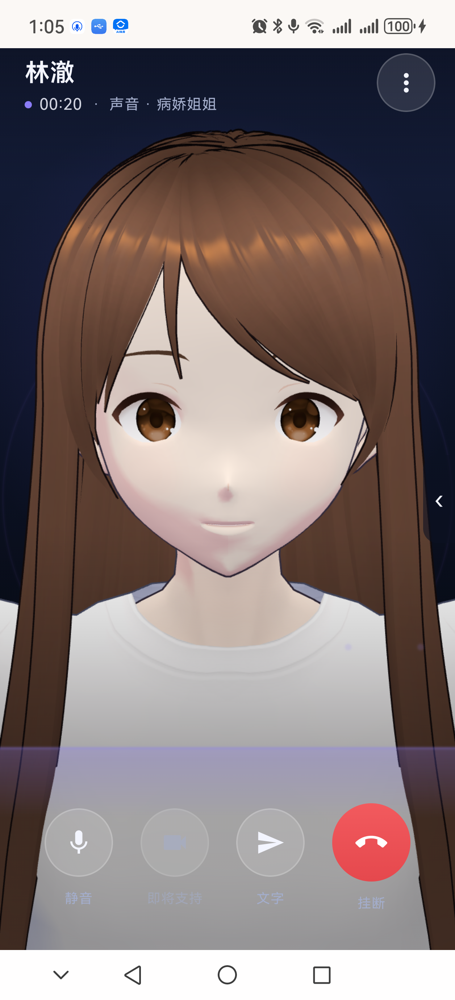
正面（描边上线后的取景）
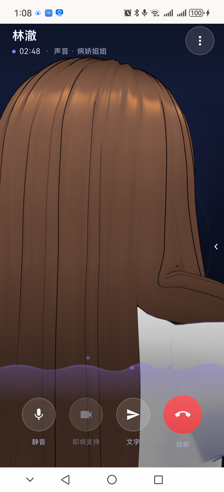
单指横扫 → rot=-222°：完整背面
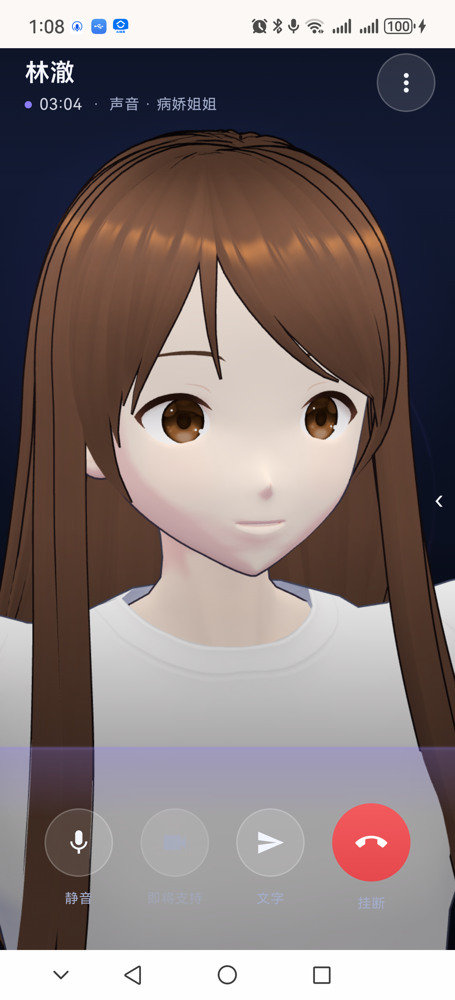
继续拖 → 累计 460° 转回正面（角度不错位）
门牌含义：如果哪天真要走 3D，先做 Web 版用 three.js+VRM 验证「3D 陪伴感是否真的比 2D 强」，别在 Android 原生里嵌（Unity UaaL 只能全屏单实例、Godot 增量 76 MB）。【调研】
5 · DUIX（硅基智能）会说话的视频窗口交互投入已冻结
端侧实时渲染真人是真本事，但形象是不可操作的整块素材——写实与高交互在同一个引擎上互斥，这是路线属性。
- 是什么
- 真人克隆端到端视频合成：形象 = 一整个 zip 模型包（Oliver），端侧 SDK 实时渲染，口型由远端 PCM 驱动，90s 连续播报零积压。【实测】
- 换装抽象
- 无。素材 = 整帧真人实拍 jpg（人和办公室背景同一张图），背景烤死 → 主题色板无效；换装 = 重新训练模型。【实测】
- 点击交互
- 钉死在素材空表上：插桩 dump 出
motionRegions.size=0（肉眼可见，不再靠扫描反推）；7 个 motion id 广播 7/7 播放、动作区间命中 0；引擎 onTouch → TouchResult.Ignored 硬编码。要「摸头有反应」= 重新打包带 motionRegions 的素材（客户端修不了）。【实测】
- 旋转
- 无任何可驱动参数。
- 许可成本
- 开源版强制 “Powered by Duix.com” 水印，>1000 MAU 需付费授权；上游推荐骁龙 8Gen2+8GB；连发音频 clip <4s 会 native crash（红线 ≥4s）。【实测+调研】
- 真机证据
- demo#3（2026-11-22）：92.3s 喂完与音频时长严丝合缝；但渲染线程只有 22.4 fps、41% 帧超 40ms 预算，背壳 90s 内 41.7→43.3°C 越过降频档——观感最真人，热代价量级上的高。【实测】
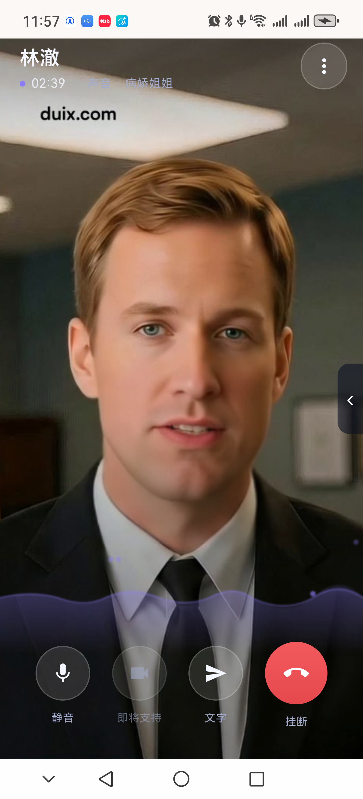
demo#3 播报中：真人「林澈」背后是烤死的虚化办公室——背景层对客户端不存在。
定位改判：lab 里的「写实试验田」，停止投交互功能。写实 HER 若要产品化，走「服务端 talking-head 推理 + 现有 LiveKit 推流」的高级订阅 SKU（GPU 成本 + 生成合成内容标识合规是入场券）。
6 · Tao Avatar（阿里 MNN）不可用 · 待下线
纯 lab 展品：关键件没开源，接不上线。
- 是什么
- 阿里 MNN 系端侧 3D 数字人（DhEngineId.TAO_AVATAR），曾在 lab 展示过。【实测】
- 换装抽象
- 无从谈起——没有任何换装通路。【实测】
- 点击交互
- 能力位仅 STATE；A2BS（音频驱动口型）未接线。【实测】
- 旋转
- 3D 形象本身可转，但没有可用的渲染路径去转。
- 许可成本
- 不产生成本问题——产生的是不可用问题。
- 真机证据
libtaoavatar.so 未打包、≥8GB 内存门槛、麒麟 GPU 必崩（libbishenggpucompiler SIGSEGV）。除非阿里开源关键件且我们重编 JNI，否则当它不存在。【实测】
总结对比表（2026-11-23 口径）
一句话主轴：产品六件事（点击/拖动/换装/吃饭/多角色/照片生成）全部落在「形象必须是可操作资产」这条轴上——所以主线在 2D 骨骼/参数系（Live2D 现在、Spine 候补、Simple 兜底），写实改走服务端流，3D 留给 Web 版验证。
近月 GitHub 上升项摘要（2026-11-23 调研，原生 + Web 两份报告）
AGSL 范式（原生特效收敛）
原生特效收敛为 RuntimeShader + SDF + RenderEffect 链：舞台 HUD 模糊、描边、水墨质感可以纯 Compose 单 pass 做，不需要 WebView/Filament。门槛是 API 33——验收机 ADY-AL00 = Android 12 / API 31，引入任何 AGSL 效果必须带老机降级路径（PrismalAGSL 的降级策略值得抄）。参考：AndroidLiquidGlass 4.8k★ Apache、Liquid-Glass-Android 332★ MIT。
psd2live（素材产能瓶颈的直接解药）
1,157★、2026-09 建仓几乎每天发版：分层 PSD 自动 rig 成标准 Cubism 3.0–5.3 资产。许可拆分干净——编辑器 GPL，但中立 IR 格式/导出框架/Rust 运行时是 MIT 可单独复用。引入候补（工具侧最高优先）：Live2D 内衣换装管线等的就是 moc3 重制，它正面命中这个产能问题。
ayagami（Live2D 许可风险的技术退路）
407★，MIT OR Apache-2.0，Rust + wgpu 清洁室 MOC3 兼容 runtime（支持到 Cubism 5.3 特性），可 WASM 跑浏览器；需自研 JNI、单人主作者、API 不稳——不进产线，作为「去 Cubism 化」唯一干净路径备档；接入前必须先过法务（无第三方合法性讨论）。同类还有 PurismCore（56★ MIT，C99 重写 Cubism Core）。
WebGPU 是上升主力，恰好是 WebView 层的短板
近月上星最快的渲染库（shaders、vgpu、liquid-dom、three.js TSL 全系）都是 WebGPU-only；Android WebView 从 Chromium 121 起有 navigator.gpu，但覆盖取决于 GPU 型号而非仅版本，且这类库探测失败时静默透明不报错。任何引入必须「能力探测 + WebGL2 退路」。另：androidx.webgpu 已到 1.0.0-alpha06——长期看原生层拿 GPU 能力比 WebView 层快，与 AGSL 结论同向。
顺手记下的（次要）
Rive Android runtime 破坏性重写（新 API：RiveWorker 异步模型、state machine→data binding；头像四态直接按新 API 写，无旧包袱）· GSAP 自 3.13 起全部免费含商用（WebView 层时间线动效可选）· vibrance（romainguy，感知均匀色彩混合，Live2D 调色相关，Apache）· 剔除的可疑项与「窗口内无有效结果」清单见同目录两份调研笔记原文，不再重复搜。